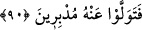
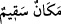

anlamına “ denilir.
İbn Atâ der ki: “Ben hastayım” demek “Ben sizin bana ve Allah’a muhalefet edip
putlara tapmanızdan dolayı hastayım” demektir. Yahut “Ben ölüm sadedindeyim,
ölümüm yakın, yakında öleceğim” demektir. Zira boynunda ölüm olan herkes hastadır.
Bir adam ansızın öldü. İnsanlar adamın başına toplandılar ve “Adam sapasağlamdı,
hiçbir şeyi yoktu; öldü” dediler. Bunun üzerine bir bedevi “Bu adam boynunda ölüm
olduğu halde sapasağlam olur mu hiç” dedi. Her ne olursa olsun İbrahim (a.s.) bu sözü,
yoruma müsait bir zeminde söylemiştir. Zira ârif bir zat asla hürmet ve haram sınırını
ihlal etmez. İbrahim (a.s.) dininden zararı def etmek ve şirk üzere olan kavmini
susturmaya tevessül etmek için bunu söylemiştir.
İzzeddin b. Abdüsselâm der ki: Söz maksatların hâsıl olmasına vesiledir. Meşrû, iyi
ve mâkul olan maksûda hem doğru hem yalanla ulaşılabiliyorsa bu durumda yalan
söylemek haramdır. Ancak bu maksuda doğru ile ulaşılamıyor, yalan ile ulaşılabiliyorsa
ve maksut da mubah ise yalan söylemek mübahtır. Şâyet maksut vâcip ve zorunlu ise
yalan söylemek de vâcip ve zorunludur. Bunun kuralı budur.
el-Es’îletü’l-mufhıme’de der ki: Bâzı âlim şu durumlarda yalan söylemeyi câiz
görmüşlerdir: 1. Harp hilesi ve savaş stratejisinde. 2: Hanımının gönlünü almada. 3)
Dargınları barıştırmada.
Doğrusunu söylemek gerekirse diğer yerlerde olduğu gibi buralarda da yalan
söylemek uygun değildir. Zira yalan haddi zâtında çirkin ve kötüdür. Bizzat özünde
çirkin ve kötü olan şey, bir takım suret, şekil, hal ve şartların değişmesiyle güzel olmaz.
Ancak bu gibi yer ve durumlarda yorum ve îmâ yoluyla böyle bir yalan söylenebilir.
Açıktan ve doğrudan söylenemez. Mesela kişi hanımını sevmediği halde ona “Ben seni
nasıl sevmem ki? Sen benim helâlim, eşim ve dostumsun” gibi şeyler söyleyebilir.
Ancak hanımını hiç sevmediği halde doğrudan “Elbette ben seni seviyorum” dese bu
halis yalan olur ve caiz değildir. Mesela Hz. Peygamber (s.a.) sağ yöne (güney) bir
askeri sefer ve hareket tertip ve icra edecekse düşmanı şaşırtmak için sol yönden
(kuzey) ahvali soruşturur; sanki o tarafa sefer düzenleyecekmiş gibi bir durum
sergilerdi. Yine Hz. Peygamber (s.a.)’in bir yönü kastederek “Ben başka bir yöne
gideceğim” demesi de yine bu kabildendir.
İbrahim (a.s.) devrindeki toplum hastayı uğursuz sayardı. Bu nedenle İbrahim (a.s.)’ın
“Ben hastayım” sözünü duyunca onu puthânede yalnız başına terk edip mâbetlerine
kaçtılar. Allah Teâlâ şöyle buyuruyor:
90. Ona arkalarını dönüp gittiler.
Hastalığın kendilerine sirayet edeceği endişesiyle İbrahim (a.s.)’dan yüz çevirip
kaçarak“Ona arkalarını dönüp gittiler.”